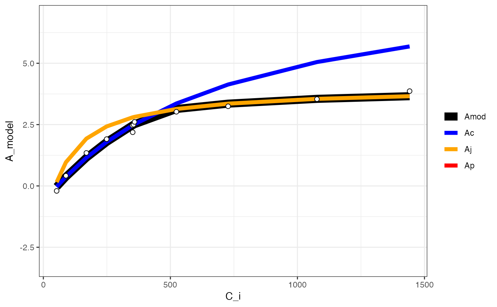

Fitting many functions across groups
fit_many(data, funct, group, ...)Dataframe
Function to fit
Grouping variables
Arguments for the function to fit. Use ?functionname to read the help file on available arguments for a given function.
fit_many fits a function across every instance of a grouping variable.
# \donttest{
# Read in your data
# Note that this data is coming from data supplied by the package
# hence the complicated argument in read.csv()
# This dataset is a CO2 by light response curve for a single sunflower
data <- read.csv(system.file("extdata", "A_Ci_Q_data_1.csv",
package = "photosynthesis"
))
# Define a grouping factor based on light intensity to split the ACi
# curves
data$Q_2 <- as.factor((round(data$Qin, digits = 0)))
# Convert leaf temperature to K
data$T_leaf <- data$Tleaf + 273.15
# Fit many curves
fits <- fit_many(
data = data,
varnames = list(
A_net = "A",
T_leaf = "T_leaf",
C_i = "Ci",
PPFD = "Qin"
),
funct = fit_aci_response,
group = "Q_2"
)
#>
|
| | 0%
|
|========= | 12%
|
|================== | 25%
|
|========================== | 38%
|
|=================================== | 50%
|
|============================================ | 62%
|
|==================================================== | 75%
|
|============================================================= | 88%
|
|======================================================================| 100%
# Print the parameters
# First set of double parentheses selects an individual group value
# Second set selects an element of the sublist
fits[[3]][[1]]
#> Num V_cmax V_cmax_se J_max J J_se V_TPU V_TPU_se R_d
#> 6 0 8.94862 0.5509706 47.01527 16.63315 0.08692268 1000 NA -0.1565895
#> R_d_se cost citransition1 citransition2 V_cmax_pts J_max_pts
#> 6 0.1264438 0.1194886 441.2967 1442.493 8 4
#> V_TPU_pts alpha alpha_g gamma_star25 Ea_gamma_star K_M25 Ea_K_M g_mc25
#> 6 0 0.24 0 42.75 37830 718.4 65508.28 0.08701
#> Ea_g_mc Oconc theta_J
#> 6 0 21 0.85
# Print the graph
fits[[3]][[2]]
#> Warning: Removed 12 rows containing missing values (`geom_line()`).

# Compile graphs into a list for plotting
fits_graphs <- compile_data(fits,
list_element = 2
)
# Compile parameters into dataframe for analysis
fits_pars <- compile_data(fits,
output_type = "dataframe",
list_element = 1
)
# }